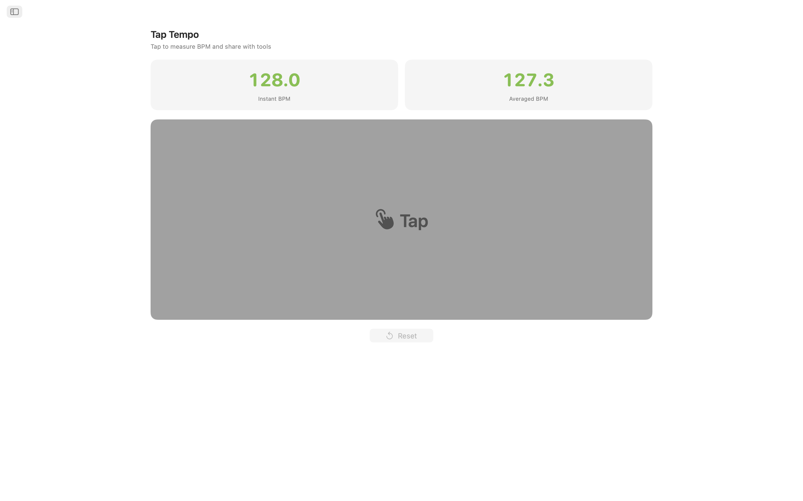
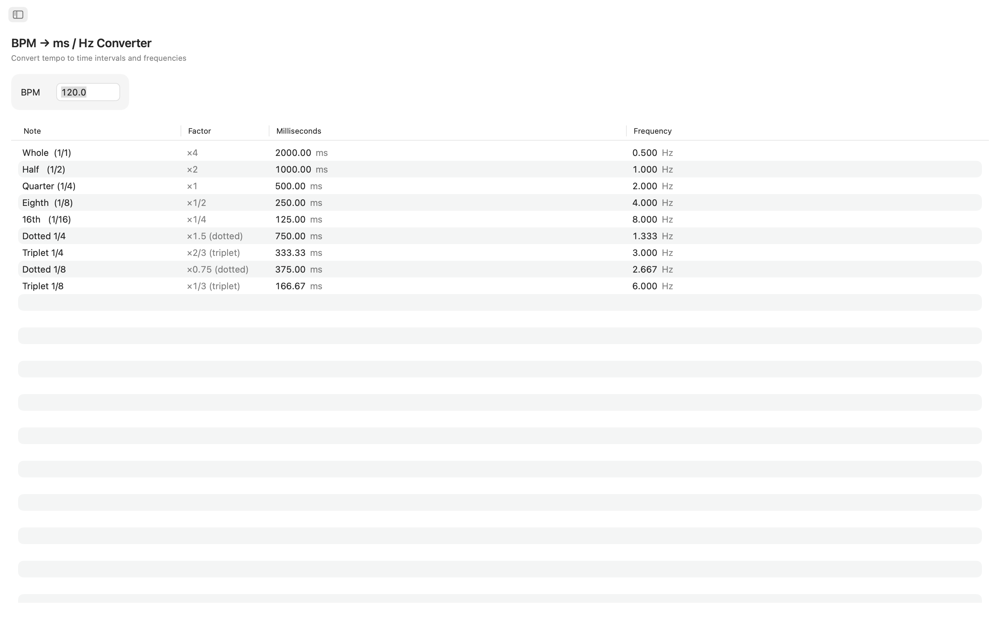
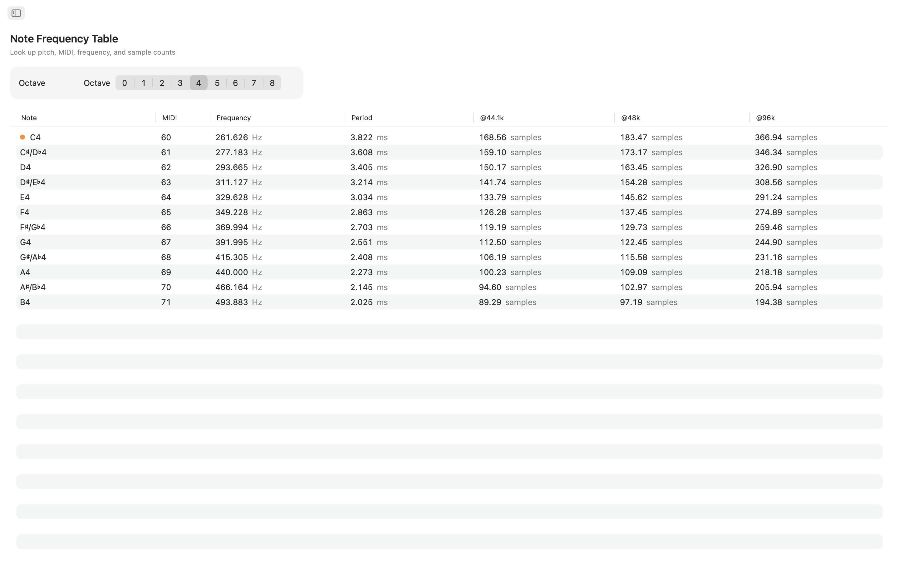
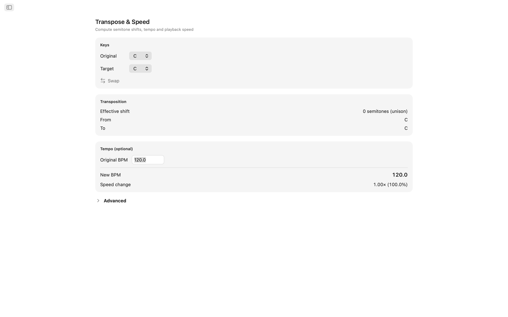
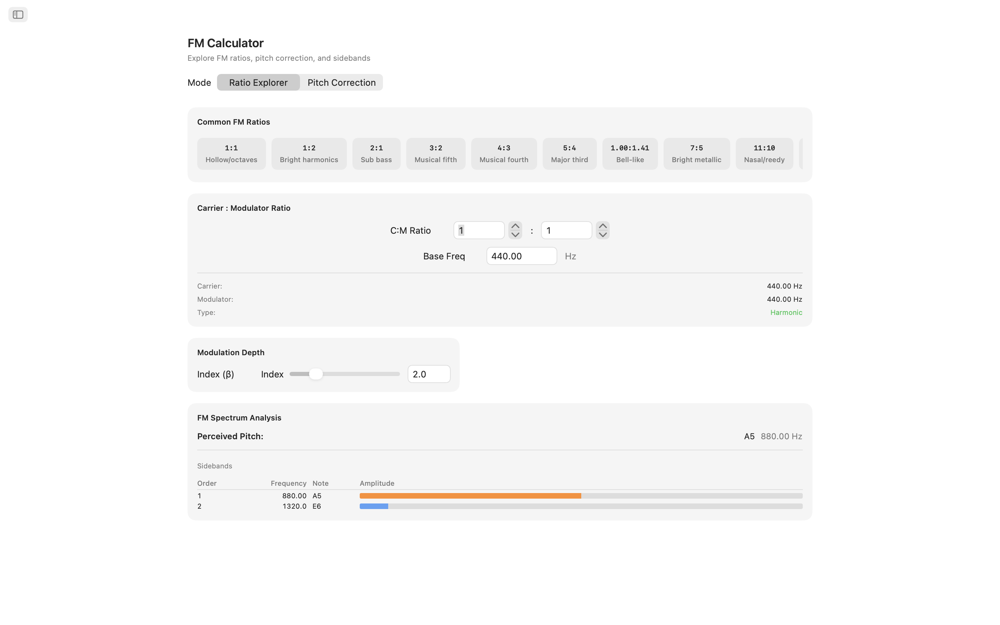
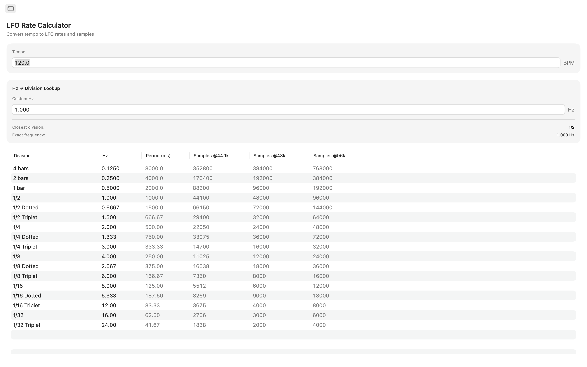
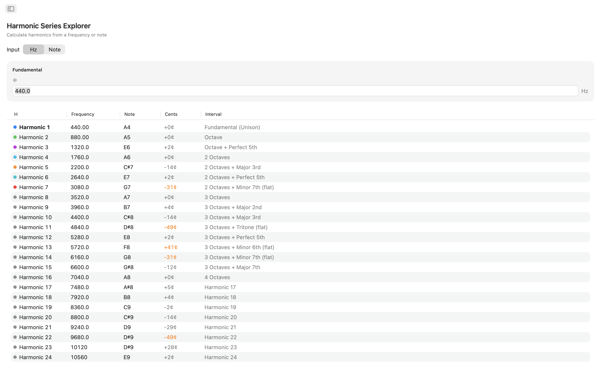
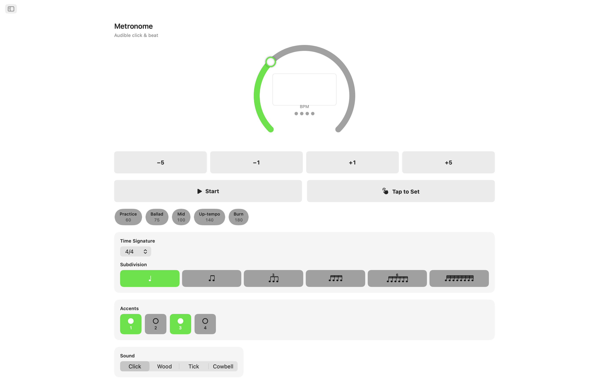
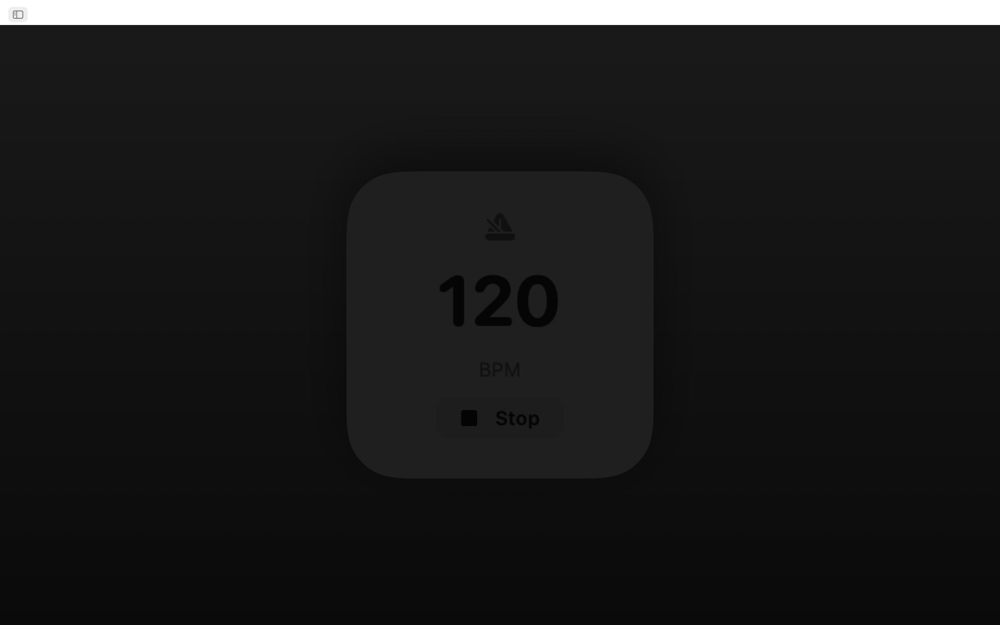
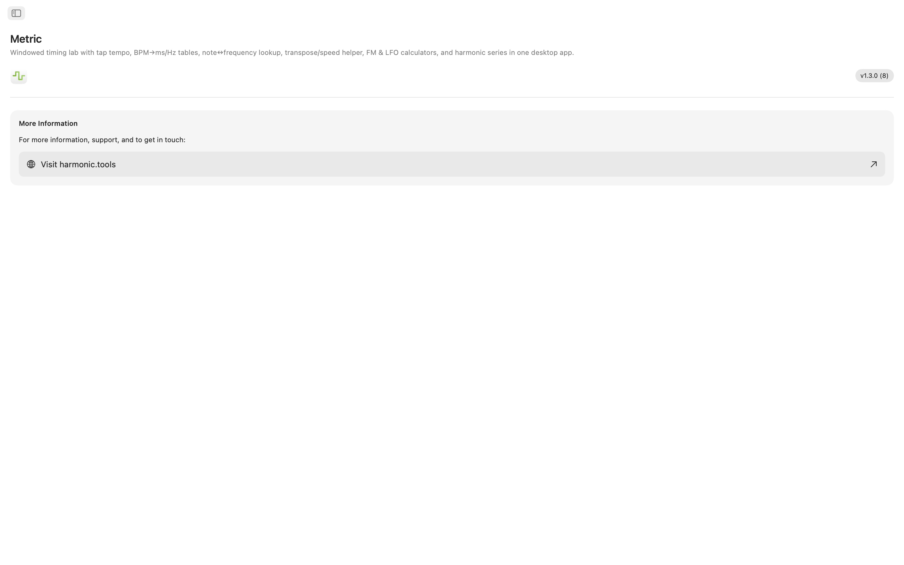

Metric for macOS
A windowed timing and frequency toolkit for macOS, now with a built-in metronome. Whether you're keeping time, setting delay times in a mix, tuning an FM patch, syncing an LFO, or transposing a sample, Metric gives you instant, precise answers all in one clean, sidebar-navigated app that sits alongside your DAW. Now with Siri, Shortcuts, and a Notification Center widget.
- Metronome with tap tempo & visual beats
- BPM → ms / Hz converter (straight, dotted, triplet)
- Note ↔ Frequency table (108 notes, tuning-aware)
- Transpose & Speed, FM Calculator, LFO Rates, 32 Harmonics
- Siri, Shortcuts & a Notification Center BPM widget
Screenshots
Includes light and dark screenshots that follow the website theme.












Features
- Metronome: A precise metronome with a tempo dial, tap-to-set tempo, time signatures and subdivisions, and a clear visual beat indicator.
- Tap Tempo: Click the large tap target to measure tempo. See instant BPM from your last tap and a rolling average over up to eight taps. Send either reading straight into the BPM Converter, Transpose, or LFO Rate tools with a single click. Your tempo flows across every tool automatically.
- BPM → ms / Hz Converter: Enter a tempo and read straight, dotted, and triplet values for whole, half, quarter, eighth, and sixteenth notes. Every row shows milliseconds and frequency in Hz, so you can dial in delay, reverb pre-delay, or sidechain timing without reaching for a calculator.
- Note Frequency Table: Browse all 108 chromatic notes from C0 to B8. Each note shows its MIDI number, frequency in Hz, period in milliseconds, and sample counts at 44.1 kHz, 48 kHz, and 96 kHz. Middle C is flagged for quick reference. Based on A4 = 440 Hz.
- Transpose & Speed: Pick an original key and a target key to see the semitone shift, interval name, and exact DAW transpose value. Add an original BPM and Metric computes the new tempo and playback speed ratio. Fine-tune with a cents slider (±100) and a speed slider spanning two full octaves (±24 semitones).
- FM Calculator: Ratio Explorer lets you set carrier and modulator ratios with a base frequency and choose from ten classic FM presets, from hollow octaves (1:1) to inharmonic bells (1:π). Pitch Correction mode works in reverse: pick a target note and get the exact carrier and modulator frequencies. Both modes show a sideband table with up to ten partials, their frequencies, nearest notes, and colour-coded amplitudes driven by a modulation index slider.
- LFO Rate Calculator: Convert any BPM into LFO rates across 17 musical divisions, from four bars down to 1/32 triplets. Each row displays Hz, period in milliseconds, and samples per cycle at 44.1 kHz, 48 kHz, and 96 kHz. Reverse lookup lets you enter any Hz value and find the closest matching musical division, with the error clearly shown.
- Harmonic Series Explorer: Start from a frequency or pick any note and see the first 32 harmonics listed with frequency, nearest note name, cents deviation, and interval label. Low-order harmonics are colour-coded for easy identification. Deviations greater than 30 cents are highlighted so you can spot inharmonic content at a glance.
Tools That Talk to Each Other
Tap a tempo once and it appears everywhere: BPM Converter, Transpose, and LFO Rate all share the same live BPM. Note Frequency, FM Calculator, and Harmonics all stay consistent at A4 = 440 Hz.
Siri, Shortcuts & Widget
Drive Metric hands-free. Ask Siri to start or stop the metronome, set a BPM, tap a tempo, convert BPM to ms, find a note frequency, or transpose a tempo. Every tool is a Shortcuts action too, and the BPM widget keeps your tempo in Notification Center.
Built for Your Desktop
- Runs entirely offline no account, no ads, no tracking
- Native macOS app with sidebar navigation
- Dark-mode aware interface that follows your system appearance
- Three industry-standard sample rates: 44.1 kHz, 48 kHz, and 96 kHz
- Resizable window keep it open beside your DAW
Whether you're a producer programming delays, a sound designer sculpting FM timbres, a synth player tuning oscillators, or an audio engineer checking frequencies, Metric puts every timing and frequency answer on your desktop.